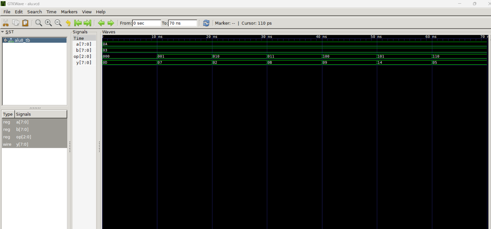

Operations: Add, Subtract, AND, OR, XOR | Pipeline stages: Fetch → Execute → Writeback
pipelined_alu.v)module pipelined_alu #(WIDTH=8) (
input clk, rst,
input [WIDTH-1:0] a, b,
input [2:0] op,
output reg [WIDTH-1:0] result
);
reg [WIDTH-1:0] a_reg, b_reg;
reg [2:0] op_reg;
reg [WIDTH-1:0] exec_result;
// Stage 1: Fetch inputs
always @(posedge clk or posedge rst) begin
if (rst) begin a_reg <= 0; b_reg <= 0; op_reg <= 0; end
else begin a_reg <= a; b_reg <= b; op_reg <= op; end
end
// Stage 2: Execute ALU operation
always @(*) begin
case (op_reg)
3'b000: exec_result = a_reg + b_reg;
3'b001: exec_result = a_reg - b_reg;
3'b010: exec_result = a_reg & b_reg;
3'b011: exec_result = a_reg | b_reg;
3'b100: exec_result = a_reg ^ b_reg;
default: exec_result = 0;
endcase
end
// Stage 3: Write back result
always @(posedge clk or posedge rst) begin
if (rst) result <= 0;
else result <= exec_result;
end
endmodulepipelined_alu_tb.v)`timescale 1ns/1ps
module pipelined_alu_tb;
reg clk, rst;
reg [7:0] a, b;
reg [2:0] op;
wire [7:0] result;
pipelined_alu uut (clk, rst, a, b, op, result);
always #5 clk = ~clk;
initial begin
$dumpfile("alu.vcd");
$dumpvars(0, pipelined_alu_tb);
clk = 0; rst = 1; a = 0; b = 0; op = 0; #10;
rst = 0;
a = 10; b = 3; op = 3'b000; #10; // add
a = 10; b = 3; op = 3'b001; #10; // sub
a = 10; b = 3; op = 3'b010; #10; // and
a = 10; b = 3; op = 3'b011; #10; // or
a = 10; b = 3; op = 3'b100; #10; // xor
#20;
$finish;
end
endmodule
Waveform showing pipeline behaviour and ALU results.
iverilog -o alu.vvp pipelined_alu.v pipelined_alu_tb.vvvp alu.vvpgtkwave alu.vcd